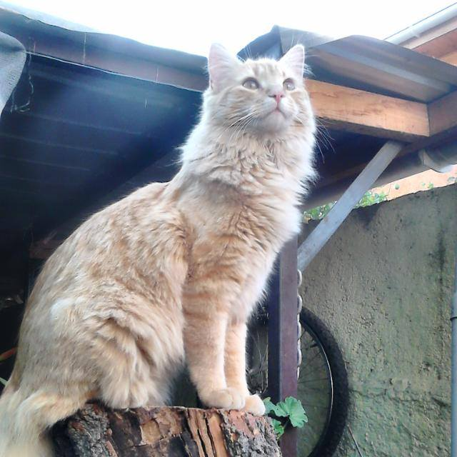

Viruta
 Esta es la unica foto que tengo de viruta sin que este durmiendo
Nombre: Viruta
Edad: 4 años
Sexo: macho
Esterilizado: Si
id microchip: 192
Viruta es manso al punto en el cual otros gatos pueden pegarle y el no suele hacer nada. viruta tambien es demasiado flojo para ser adoptado, razon por la cual no hay stock disponible.